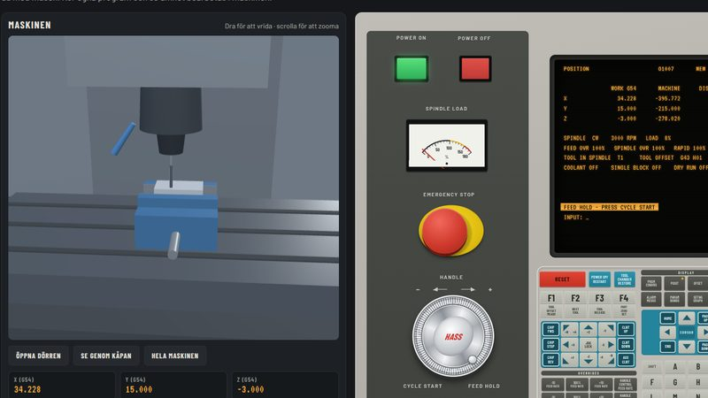
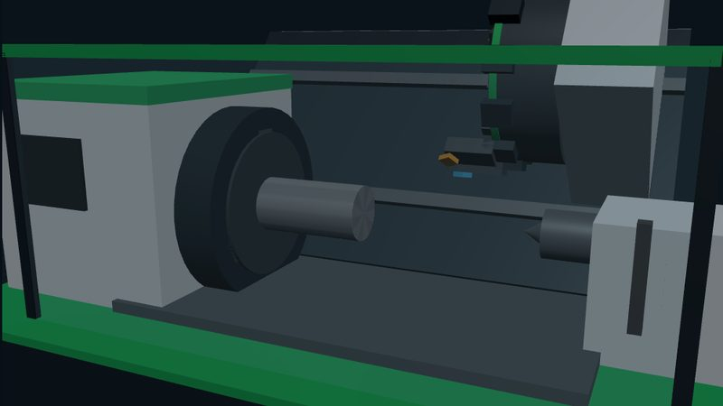
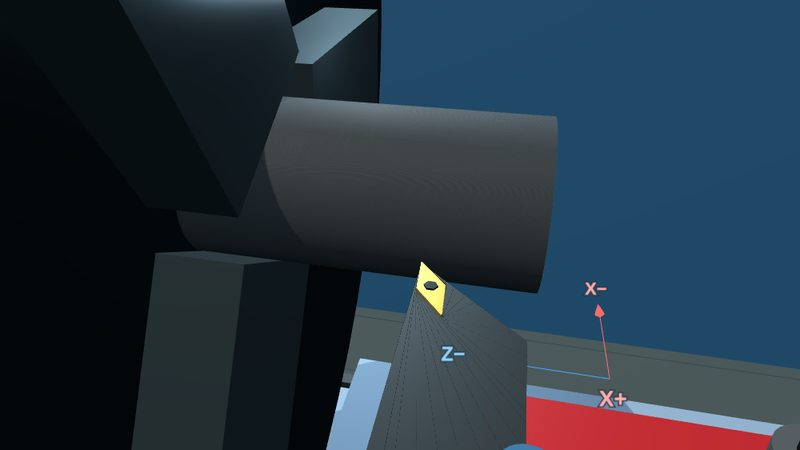

CNC-Grönt kort · Simulator
Välj maskin
Öva på maskinerna i en simulator innan du står vid den riktiga. Klicka på en maskin för att starta.
SIM-01FRÄS · 3 AXLAR

Hass fräs
Vertikal fleroperationsmaskin med styrpanel, verktygsmagasin och 3D-vy: hemkör, mät in verktyg och nollpunkt, redigera och kör program och se ämnet fräsas och borras.
Öppna simulatorn→
SIM-02SVARV · G-KOD

CNC-svarv
Snedbäddssvarv med G-kod i Fanuc-stil: skriv eller välj ett program, kör det och se detaljen växa fram och stickas av.
Öppna simulatorn→
SIM-03SVARV · MANUELL

Supportsvarv
Konventionell svarv med vevar och matning: välj ämne, verktyg och skärdata och svarva fram detaljen själv.
Öppna simulatorn→
Simulatorerna är gjorda för dator med mus och fungerar även på surfplatta i liggande läge. På mobil blir skärmen för liten.